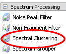
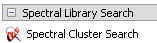
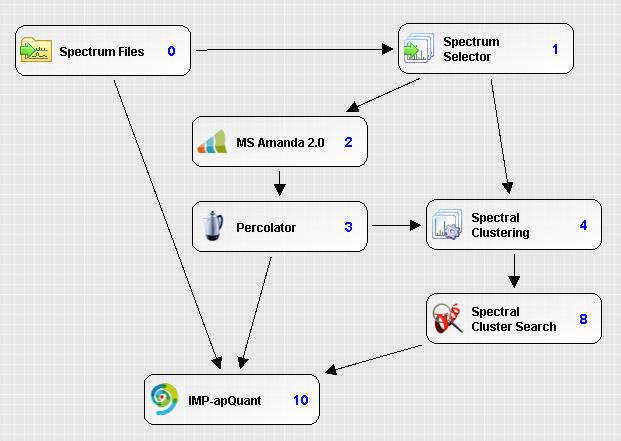
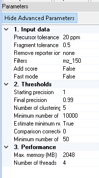
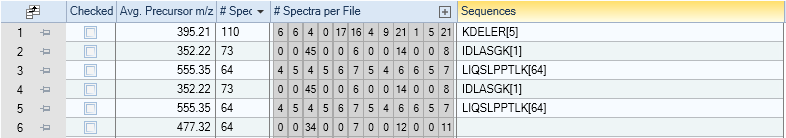

Proteome Discoverer Tutorial¶
The spectra-cluster Proteome Discoverer Node integrates our spectra-cluster algorithm into Proteome Discoverer version 2.1. Its current main use case is to improve the quantitation of low-abundant proteins using label-free quantitation.
Overview
Free version of Proteome Discoverer¶
Thermo provides a free version of Proteome Discoverer through its demo versions. The demo versions remain fully functional indefinitely. Only Thermo’s commercial nodes are limited to 30 days. After this time, all freely available nodes remain fully functional.
You can download the demo version of Proteome Discoverer 2.1 from https://thermo.flexnetoperations.com.
Note
The spectra-cluster node currently fully supports Proteome Discoverer version 2.0 and 2.1. The node is also functional under version 2.3 but the clustering result table still lacks some columns.
After registering and signing in:
- Select Product List (on the left)
- Select Demo from the subsequent list (bottom middle)
- Find Proteome Discoverer 2.1 SP1 in this list
- For most cases, the Proteome Discoverer 2.1 SP1 - Installer Only is the right file to download and install.
- The licence key for the demo version is J3H0-D5BN-P8TB-4RJX (taken from https://portal.thermo-brims.com/index.php/component/thermosoftwares/thermosoftware/127).
Installing free nodes¶
The Protein Chemistry Facility at the IMP publishes a wide variety of free Proteome Discoverer nodes. The whole collection can be found at http://www.pd-nodes.org.
To replicate our setup, install MS Amanda 2.0 and apQuant from this list. This includes the free search engine MS Amanda and apQuant for label-free quantitation into you Proteome Discoverer installation.
Installing the spectra-cluster node¶
Similar to other Proteome Discoverer by the Protein Chemistry Facility, simply download the spectra-cluster node from http://ms.imp.ac.at/?goto=spectra-cluster. After running the setup tool, you will find the spectra-cluster node in your Proteome Discoverer interface:
Additionally, you will find a second node to infer additional PSMs based on the clustering results (see below):
Using the spectra-cluster node¶
In our label-free quantitation pipeline we use spectrum clustering to infer additional peptide identifications from the clustering results.
The workflow is built in the following way:
- Select MS2 spectra (Spectrum Selector)
- Perform the search (MS Amanda)
- Filter the search results based on the set FDR (Percolator)
- Perform the clustering (Spectral Clustering)
- Infer additional identifications (PSMs) from the clustering results (Spectral Cluster Search)
- Mark these additional identifications as verified (Fixed Value PSM Validator) - this is required by other Proteome Discoverer nodes
- Perform the label-free quantitation (IMP-apQuant)
Clustering settings¶
The spectra-cluster node offers several settings to control its behaviour (showing advanced parameters as well):
Hint
The only options that should always be adjusted (or at least looked at) are
All other parameters can be left at their default value for the vast majority of datasets.
All paramteres in bold are non-advanced and always visible.
Precursor tolerance
Defines the precursor tolerance to use for clustering. Generally, this matches the search engine settings. Nevertheless, we have observed that using large tolerances does not decrease clustering performance.
Fragment tolerance
The fragment ion tolerance (always defined in Da) should also be set to match the search engine settings / the instrument resolution. Setting this as low as possible has the most important effect on clustering accuracy.
Remove reporter ion
If you process isobarically labelled spectra, the respective reporter ions should be removed by selecting the respective value from the list. This greatly improves clustering accuracy for these experiments.
Filters
The mz_150 and mz_200 filter remove all peaks below 150 m/z / 200 m/z respectively from the spectra prior to clustering. This is generally a good idea since these peaks do not contain any fragment information. The default setting of mz_150 should be appropriate for nearly all settings.
Add score
If selected, additional scores are added to the .clustering result file. This is a very slow process and should only be used if the scores are required in a subsequent analysis step. Generally, they will not be needed.
Fast mode
This mode pre-processes the spectra prior to clustering to improve the speed of the similariy assessment. As a down-side it also decreases clustering accuracy. For the vast majority of datasets, this mode is not needed.
Starting precision
The spectra-cluster algorithm performs clustering in several rounds (see below). In each round, a lower target precision is being used. The precision is defined as the average cluster purity or rather the inverse of the proportion of incorrectly clustered spectra. A precision of 1 therefore means that only perfectly matching spectra are clustered. A precision of 0.99 means that 1% of the processed spectra are expected to be incorrectly clustered.
In all our benchmarks, a starting precision of 1 (default value) gave the best results. This setting should therefore generally not be changed.
Final precision
The final precision defines the inverse of the expected number of incorrectly clustered spectra. This is the main parameter to control clustering accuracy. A value of 0.99 will result in 1% of incorrectly clustered spectra. Very high accuracies will lead to a higher degree of cluster fragmentation. This means, that spectra that represent the same peptide will be split accross several clusters instead of being grouped in a single one.
Number of clustering rounds
The number of clustering rounds to perform. In all our benchmarks, increasing the number of rounds over 5 did not increase clustering performance. Therefore, this setting generally does not have to be adapted.
Minimum number of comparisons
Deprecated This option should generally no longer be used. Since the spectra-cluster algorithm was originally designed to process repository-sized datasets, a correction factor was necessary to adapt the statistics for small datasets (less than 1,000 MS runs). In the current version this factor is automatically derived from the dataset.
Estimate minimum number of comparisons
This feature automatically determines the correction factor (see above) required for clustering smaller datasets from the data itself. This feature should only be disabled for comparisons with legacy data. For any other purpose, this feature should always be enabled. If enabled, the Minimum number of comparisons setting is ignored.
Comparison correction factor
If the Estimate minimum number of comparisons feature is enabled, a minimum correction factor can be set. Generally, this is not needed. In some very small datasets (1,000 - 10,000 spectra) a factor of 1,000 can improve clustering accuracy. In our own benchmarks, we never had to use this feature.
Minimum number of consensus peaks
During the clustering process, the created consensus spectra are filtered. In some cases, this filtering can lead to very scarce spectra. Therefore, a minimum number of peaks should always be set. We recommend this to be set at 50 peaks.
Max memory
The maximum memory available to the clustering process (in MB). To improve performance, this value should be set as high as possible. A larger number of threads (see below) will also require more memory.
Number of threads
The number of parallel clustering threads used to process the dataset. Larger numbers (if supported by the hardward) improve performance.
Clustering results¶
When using the spectra-cluster Proteome Discoverer node a new table is added to the results:

The clustering table presents a concise overview of the clustering results:
The main information is:
Avg. Precursor m/z
The average precursor m/z of the cluster’s spectra
# Spetra
The total number of spectra within the cluster
# Spectra per File
The number of spectra per input file that are part of the cluster. This is one of the most powerful features of this result view as it immediately shows a rough estimate of a molecules abundance (based on spectral counts) accross the different MS runs.
When clicking the + icon on the right, the complete filenames are shown.
Sequences
A condensed summary of the frequency of sequences observed in the cluster. In the shown example, every cluster only contains spectra that were all identified as the same peptide.
If this field is empty (row 6 in the example) the cluster only consists of unidentified spectra.
As with any Proteome Discoverer result table, this table can easily be exported to, for example R, for further analysis. Thereby, clustering results can be used to, for example, characterize samples based on the observed abundance of clusters alone independent of any identification data.
Note
In the setup shown above, additionally inferred PSMs are automatically considered by apQuant when performing label-free quantitation. Therefore, no additional measures have to be taken to improve label-free quantitation results.